Use Case
In one of the previous use cases we explored SQS (Simple Queue Service) which
is a managed Queue Service from AWS. SQS is used to build highly available and
scalable applications. AWS recommends SQS for new applications. But, for
existing applications using Apache ActiveMQ
AWS recommends using Amazon MQ Service.
Porting existing applications using Apache
ActiveMQ to Amazon MQ requires very minimal changes to the application. Only
the end point must be changed and we would be able to take all the advantages
of Apache ActiveMQ. By using “Amazon MQ Services” AWS will automatically take
care of the infrastructure, installing, high availability of Apache ActiveMQ.
The developer can focus more on the application.
Amazon MQ is free to try. The AWS Free Tier includes up to 750 hours of a
single-instance mq.t2.micro or mq.t3.micro broker per month, and up to 5GB of
durability optimized storage per month for one year. Amazon MQ also supports
both single-instance brokers, suitable for evaluation and testing, and active/standby
brokers for high availability in production.
Apache ActiveMQ supports a range of libraries in different languages for
developing applications. Also, it also supports different protocols like AMQP,
MQTT, OpenWire and STOMP.
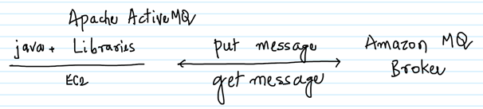
-- Create an EC2 instance with the below details and connect to it via Putty.
-- Ubuntu
-- t2.micro
-- Security Group with inbound Port 22 allowed
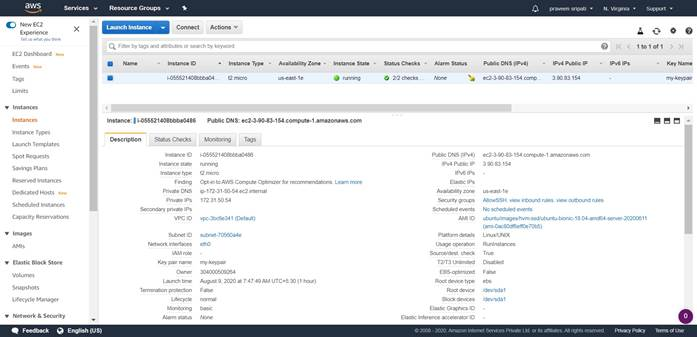
-- On the EC2 execute the below commands to
install JDK and maven.
sudo apt update
sudo apt install default-jdk maven -y
-- Create a Security Group called AllowMQ as shown below with Port 61617 allowed in the inbound. This Security Group will be attached to Amazon MQ Broker to allow the connection to it later on.
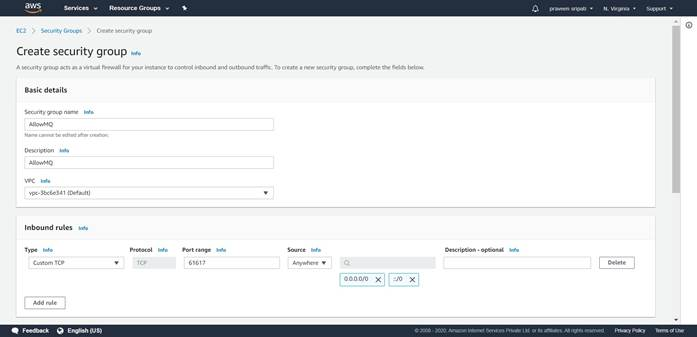
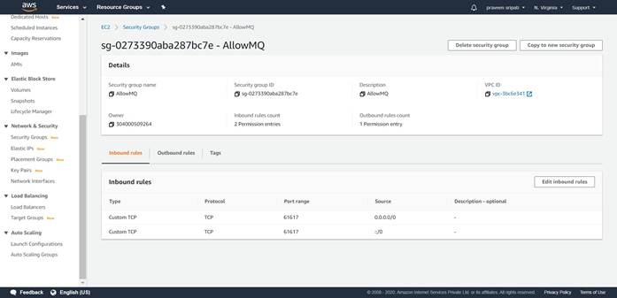
-- Go to the Amazon MQ Management Console and click on “Get started” to create a Amazon MQ Broker.
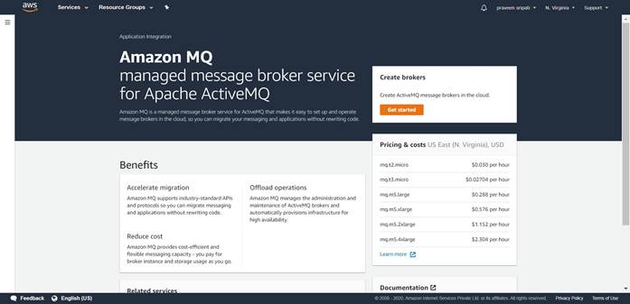
-- Make sure to select “Single-instance broker’ and “Durability optimized” to
make sure it falls under the AWS free tier. Click on Next.
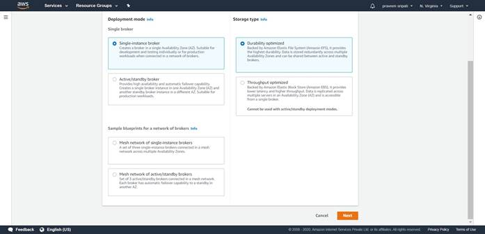
-- Enter the broker name as MySalesBroker and select the instance type as mq.t3.micro as it falls under the AWS free tier. Enter the username and password for the broker.
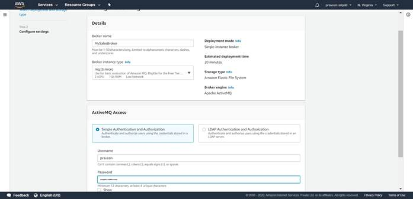
-- In the same screen expand “Additional settings” and select “Select existing security groups” and select the “AllowMQ” security group which has been created in the previous step.
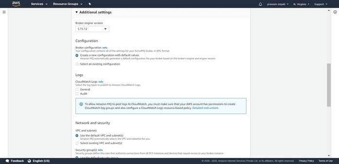
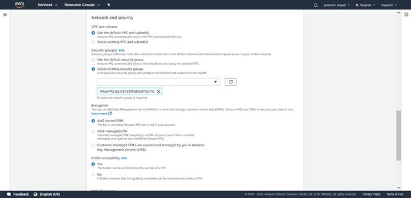
-- Click on “Create Broker”.
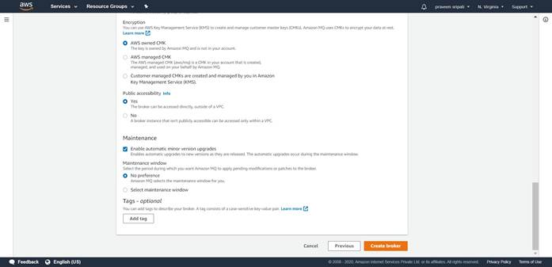
-- Initially the Broker will be in a “Creation in progress” status.
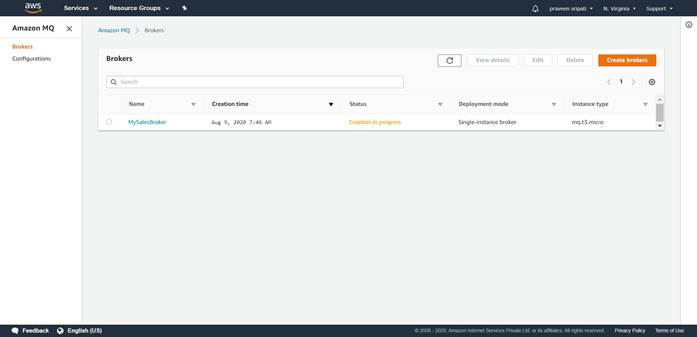
-- Click on the Broker name to get more details about the same.
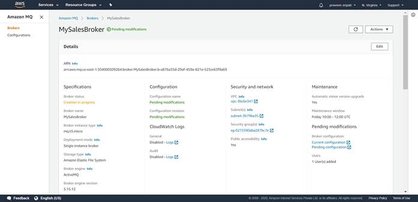
-- It will take about 10 minutes for the status to change to Running. Now the Amazon MQ Broker is ready to be used.
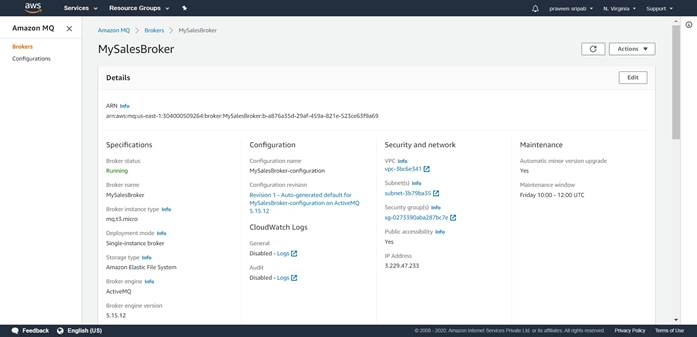
-- From the same screen note down the OpenWire Endpoint, the same would be used to connect to the Amazon MQ Broker from Java program on EC2.
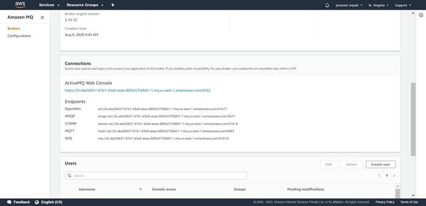
-- On the EC2 execute the below command to create a maven project.
mvn -B archetype:generate \
-DarchetypeGroupId=org.apache.maven.archetypes \
-DgroupId=org.example.basicapp \
-DartifactId=my-mq-app
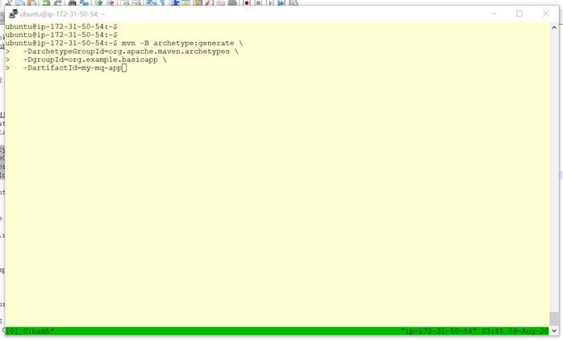
-- Change to the “my-mq-app/src/main/java” folder by executing the below command. Also, delete the org folder.
cd my-mq-app/src/main/java
rm -rf org
-- Create a file AmazonMQExample.java in the EC2 with the attached code in the my-mq-app/src/main/java folder.
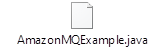
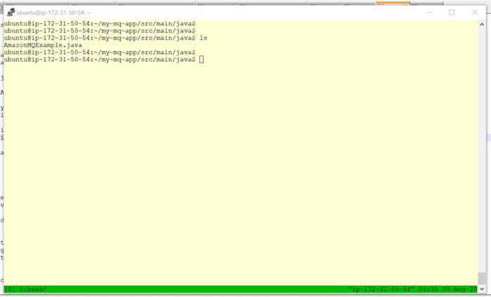
-- Make sure to change the EndPoint, Username and Password staring from line 25. The Username and the Password are provided while creating the Amazon MQ Broker. The EndPoint is got once the Amazon MQ Broker has been created from the Management Console.
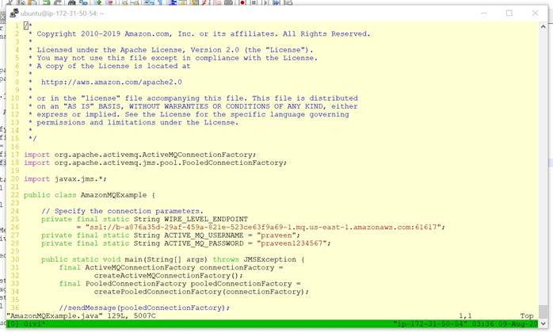
-- In the Java program sendMessage and receiveMessage methods are invoked in lines 36 and 37 respectively. sendMessage() puts a message in the Queue and the receiveMessage() gets the message from the Queue and prints the same to the Console. These two lines can be commented/uncommented to perform only of the operation.
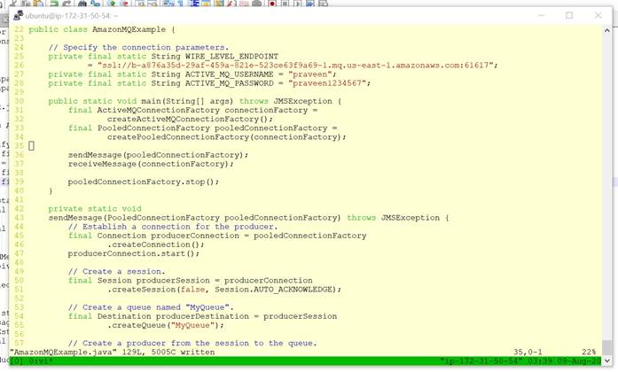
-- In the folder my-my-app, remove the pom.xml (rm pom.xml) and create a new one with the attached file. This has all the dependencies for the Java program to be compiled and executed.
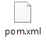
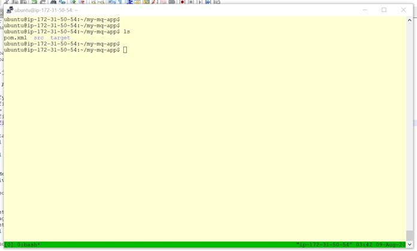
-- Execute the below command to compile, package and finally execute the Java program.
mvn clean compile exec:java
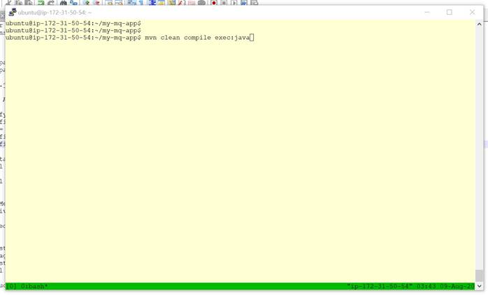
-- If the program executes successfully, then the below messages would be displayed towards the end in the console output.
Message sent.
Message received: Hello from Amazon MQ!
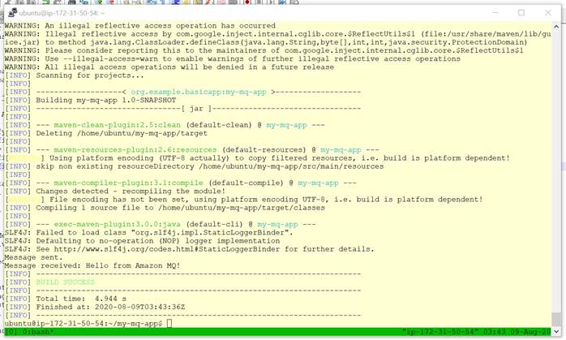
Voila !!!! We are able to successfully put and get messages from Amazon MQ.